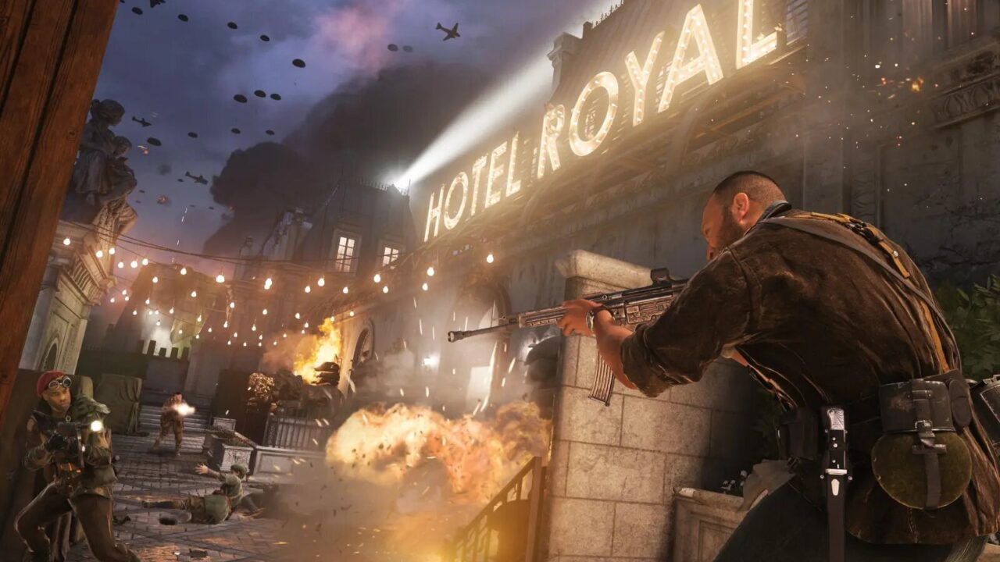
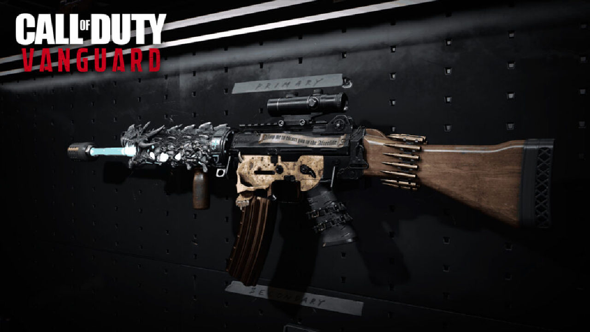
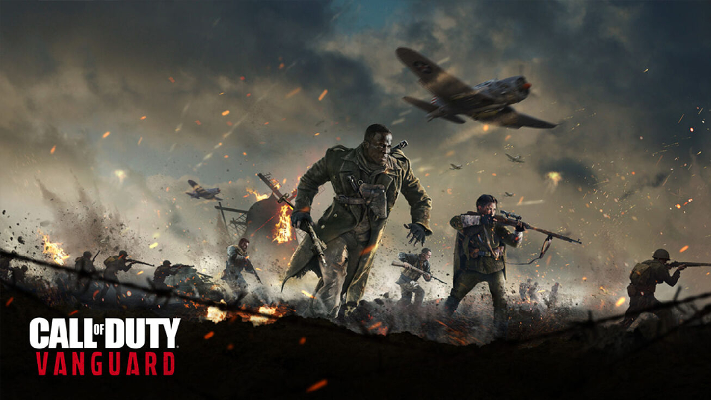

Previo – Call of Duty: Vanguard, un multiplayer que nos invita a migrar a la nueva generación
Un poco más de los mismo, pero eso sí, visualmente sorprendente.
Hace ya unos días tuve la dicha de probar la beta multiplayer de Call of Duty: Vanguard la cual, si bien no resultó tan impresionante como esperaba, sí me hizo caer en cuenta que ya va siendo hora de migrar a la nueva generación de consolas.
Call of Duty ya es bastante cíclico y cliché, todo mundo lo sabe e incluso quienes nos consideramos “fans” o seguidores de la franquicia lo tenemos muy presente. Este nuevo juego de la Segunda Guerra Mundial desarrollado por Sledgehammer Games al igual que ocurrió con CoD: WWII, va pareciendo solo una entrega más en cuanto al multijugador se refiere.
Sabemos que el atractivo de esta nueva historia se encontrará justamente en la campaña y las sorprendentes cinemáticas que la acompañan y que ya hemos visto en diversos tráilers. Por lo tanto, resulta importante hablar del multiplayer; qué es lo que esperamos, en qué podría diferenciarse con lo que hemos jugado en el pasado y sobre todo, por qué es un multijugador hecho para la nueva generación de consolas.
Modos de Juego
La beta de Call of Duty: Vanguard aunque no dio acceso al catálogo completo de mapas y modos de juego (como en el caso de cualquier beta), fue suficiente para mostrar que se trata de un CoD hecho y derecho. Una experiencia que ya hemos disfrutado más de una vez en el pasado, aunque con algunos ligeros cambios.
Uno de ellos es el modo de juego Patrol muy similar a Hardpoint, que consiste en hacerte con una zona de captura, solo que esta se vuelve dinámica a lo largo de la partida, es decir, se va moviendo lo que hace que sea un poco más divertido.
Fuera de eso encontrarás los típicos Team Deathmatch, Domination y Kill Confirmed, aunque eso sí, estos modos de juego ya clásicos dentro de la franquicia de Call of Duty, se integran a una nueva dinámica bastante interesante e intensa nombrada Combat Pacing.

El Combat Pacing es una nueva forma de darle a todas las partidas una mayor intensidad por medio del número de jugadores. Son tres modos uno con mayor cantidad de jugadores que el otro, es decir uno más intenso y alborotado que el anterior. Quedan de la siguiente manera:
- Táctico: Es la forma más tradicional del juego que ya conocemos con 12 jugadores en equipos de seis contra seis.
- Asalto: Ya aumenta considerablemente la acción de la partida con combates de hasta 28 peleadores, es decir, 14 contra 14.
- Blitz: Finalmente está el modo Blitz que permite enfermas partidas hasta con 48 jugadores como máximo, con equipos de 24 contra 24.
El Combat Pacing resultará tan divertido como desesperante pues si bien se vuelve un campo de batalla con acción cada centímetro, además de la posibilidad de acertar varios kills, también es muy confuso. Quizá por los mapas de tamaño “normal” elegidos para la beta: Gavutu, Hotel Royale y Red Star. Habría que esperar a probar el modo Blitz en un mapa de mucho mayor tamaño.
Mapas y Armas
Y hablando de los mapas, aunque el multiplayer de Call of Duty: Vanguard contará con 20 escenarios confirmados, de momento solo pudimos apreciar tres, todos inspirados en la Segunda Guerra Mundial. Pero lo importante aquí es el dinamismo de los mismos, la experiencia del jugador con el mismo entorno.
Para explicar esto hablemos un poco de las armas, que como ya imaginarás, se trata de un catálogo de rifles de asalto, pistolas automáticas y más, típicas de la WWII como el STG-44, la subametralladora M1928, mejor conocida como Thompson, y el rifle de cerrojo KAR98K, que fueron algunas de las que pudimos probar.
Las armas al igual que ocurre en Mordern Warfare, podrán ser modificadas y mejoradas conforme las uses y avances con ellas gracias al modo Gunsimth que te permite personalizar tu equipo con diversos artilugios para convertirlas en verdaderas máquinas de guerra.

Dentro del Gunsmith se añade a Call of Duty: Vanguard la posibilidad de modificar el tipo de municiones,algo relativamente nuevo pues ya existía esta posibilidad con algunos rifles en títulos pasados. Tus balas pueden ir desde lo más simple o convencional, hasta aquellas capaces de atravesar los blindajes más pesados.
Esta última es una modificación de relevancia dentro de los mapas del multijugador de Call of Duty: Vanguard, pues aquí la penetración de las balas en el ambiente del escenario toma un papel muy importante. Es algo que ya existía desde Modern Warfare, pero ahora se perfecciona y afina con el fin de hacer una experiencia mucho mucho más realista.
A esto le añadimos que de acuerdo al tipo o munición de los ocho disponibles, también se verá afectado tu campo de visión debido al nivel de explosión de la bala, que podría generar mayor luminosidad o empañar tu mira con partículas de pólvora, y de igual forma cambiará radicalmente la patada de retroceso así que podría ser más difícil apuntar. Habrá que elegir sabiamente la configuración de nuestras armas.
Un juego para consolas de nueva generación
Finalmente hablemos de por qué este es un juego para consolas de nueva generación… Por una simple cuestión, es un juego con un amplio y hermoso detalle que no sólo se disfrutará en la campaña, sino también en el multijugador.
Cada mapa está bañado de aspectos que incluso vale la pena detenerse a mirar, pero que claramente solo se podrán apreciar en una Series X|S, una PS5 o PC, pues de lo contrario, no habrá gran diferencia entre los pasado títulos y este que está totalmente pensado para las nuevas consolas. Y claro que un buen monitor o televisor que de menos proyecte en 4K será también de suma relevancia para disfrutar al 100% lo que Sledgehammer Games y Activision tienen listo para nosotros.
Por otro lado, no cabe duda que será interesarle dedicarle unas cuantas horas a Call of Duty: Vanguard para conocer a fondo todo lo que traerá a la franquicia del FPS, incluida su participación en Warzone. No obstante, hay que reconocer que no es más que otro CoD, que se apila a la lista de repetitivos títulos que ya conocemos.

Habrá que esperar al 5 de noviembre para poder disfrutar de la campaña que muy en lo personal, es lo que más me entusiasma de este título y lo que más he disfrutado desde Call of Duty 4: Modern Warfare, hasta Call of Duty: Black Ops Cold War.
¿Jugaste la beta abierta del multiplayer de Call of Duty: Vanguard?